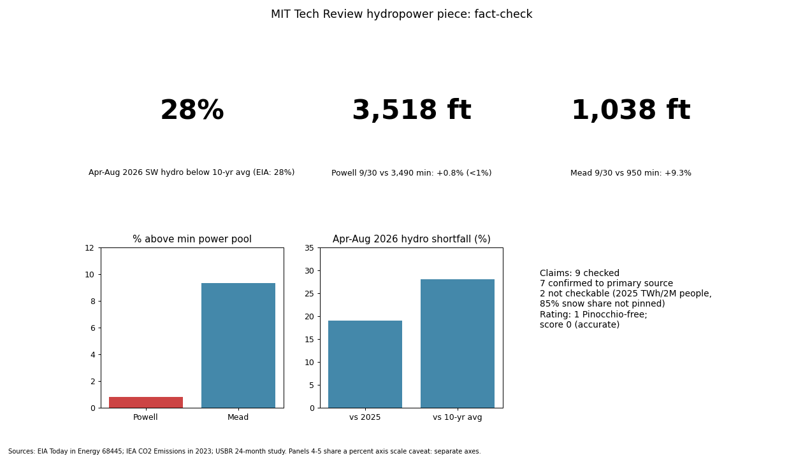

Every checkable figure matched sources: 28% below 10-year average (EIA), Powell 3,518 ft vs 3,490 ft (0.8%), Mead 1,038 vs 950 ft (9.3%), IEA hydro share ~40%+ of 1.1% emissions rise. Caveats: article read only via summarizing fetch (no verbatim quotes seen); "nearly 7 TWh / 2 million people" for 2025 and the 85% snowmelt share could not be pinned to a primary source; the two-plant 7 TWh is tight against EIA's implied ~6.7 TWh regional 2025 total.
"Less than 1% above" is true but ~28 ft of head; plants kept operating.